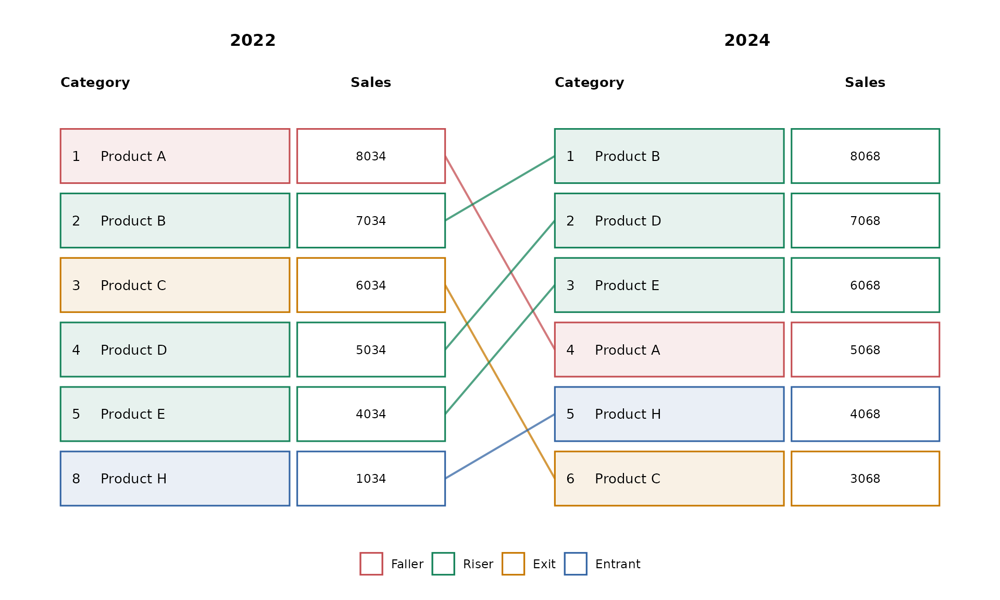
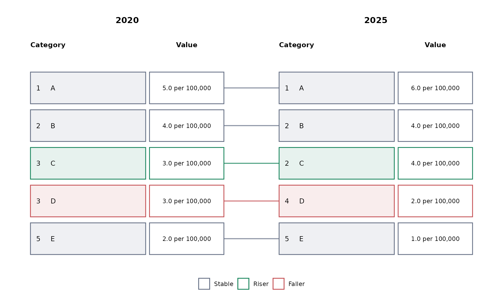
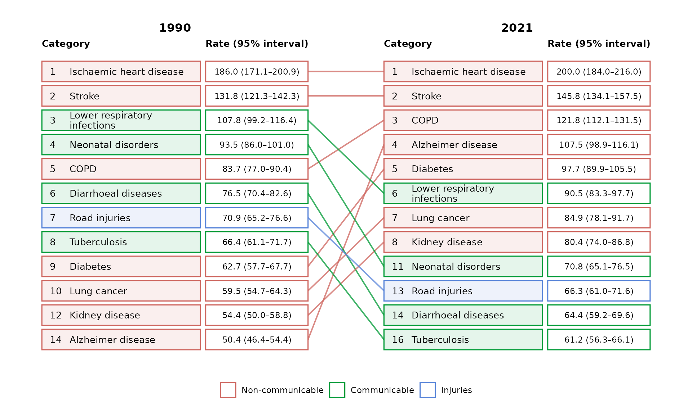
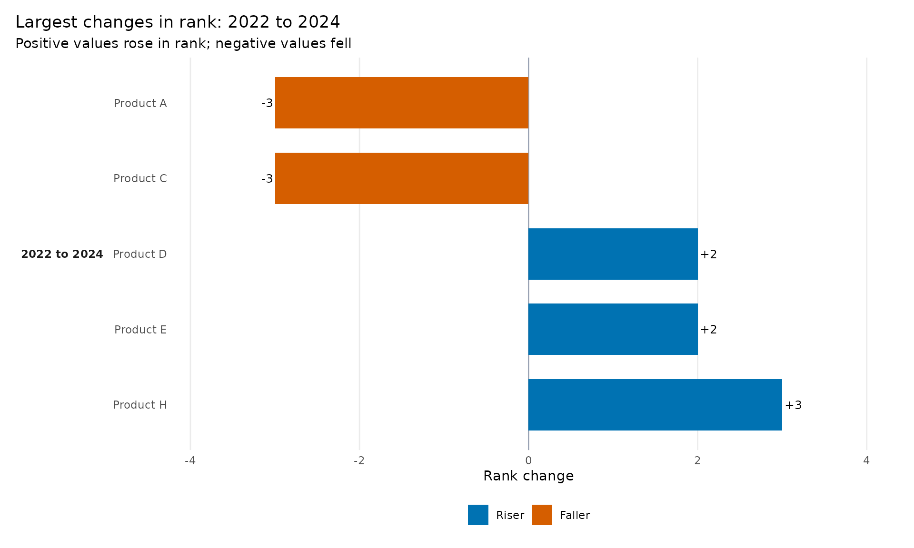

ggrank shows how categories move through an ordered
ranking while retaining their underlying values. Start with one row per
category and period and map the three required columns.
Teaching-data notice: All datasets bundled with
ggrankare synthetic. They do not contain Global Burden of Disease estimates.ggrankis an independent project and is not affiliated with or endorsed by the Institute for Health Metrics and Evaluation (IHME).
library(ggrank)
ggrank(
ggrank_products,
category = product,
period = year,
value = sales,
periods = c(2022, 2024),
top_n = 5,
value_header = "Sales"
)
The boundary view is the default: a category outside the top five remains in the figure when it enters or exits the top five in another displayed period.
Let ggrank calculate the ranks
Users normally supply values rather than ranks. Inspect the
calculation with ggrank_data():
tied_rates <- data.frame(
year = rep(c(2020, 2025), each = 5),
organism = rep(c("A", "B", "C", "D", "E"), 2),
rate = c(5, 4, 3, 3, 2, 6, 4, 4, 2, 1)
)
ggrank_data(
tied_rates,
category = organism,
period = year,
value = rate
)
#> category period value rank display_position label group
#> 1 A 2020 5 1 1 5 <NA>
#> 2 B 2020 4 2 2 4 <NA>
#> 3 C 2020 3 3 3 3 <NA>
#> 4 D 2020 3 3 4 3 <NA>
#> 5 E 2020 2 5 5 2 <NA>
#> 6 A 2025 6 1 1 6 <NA>
#> 7 B 2025 4 2 2 4 <NA>
#> 8 C 2025 4 2 3 4 <NA>
#> 9 D 2025 2 4 4 2 <NA>
#> 10 E 2025 1 5 5 1 <NA>Ranking uses exact numeric values. Equal values share a competition
rank by default (1, 2, 3, 3, 5) but receive separate
alphabetical display positions. All categories tied at the
top_n boundary are included, so a top-ten figure can
contain more than ten boxes. Do not filter to the top N before calling
the package, because doing so prevents entrant and exit detection.
Display formatting is independent of ranking. For example, rank an unrounded rate while printing a prepared one-decimal label:
formatted_rates <- transform(
tied_rates,
rate_label = sprintf("%.1f per 100,000", rate)
)
ggrank(
formatted_rates,
category = organism,
period = year,
value = rate,
label = rate_label
)
Group colours and prepared labels
Use group for meaningful category colours and
label when values require a domain-specific display format.
Supplied ranks are also supported.
ggrank(
ggrank_causes,
category = cause,
period = year,
value = rate,
rank = rank,
label = display_value,
group = cause_group,
periods = c(1990, 2021),
top_n = 10,
value_header = "Rate (95% interval)"
)
The returned value is a regular ggplot object, so titles, captions, and other ggplot2 layers can be added normally.
Inspect the underlying comparison
ggrank_table() returns a readable analytical companion
with one row per category and adjacent transition.
changes <- ggrank_table(
ggrank_products,
category = product,
period = year,
value = sales,
periods = c(2022, 2024),
top_n = 5
)
changes
#> category from to rank_from rank_to rank_change value_from value_to
#> 1 Product B 2022 2024 2 1 1 7034 8068
#> 2 Product D 2022 2024 4 2 2 5034 7068
#> 3 Product E 2022 2024 5 3 2 4034 6068
#> 4 Product A 2022 2024 1 4 -3 8034 5068
#> 5 Product H 2022 2024 8 5 3 1034 4068
#> 6 Product C 2022 2024 3 6 -3 6034 3068
#> value_change label_from label_to group missing_from missing_to status
#> 1 1034 7034 8068 <NA> FALSE FALSE riser
#> 2 2034 5034 7068 <NA> FALSE FALSE riser
#> 3 2034 4034 6068 <NA> FALSE FALSE riser
#> 4 -2966 8034 5068 <NA> FALSE FALSE faller
#> 5 3034 1034 4068 <NA> FALSE FALSE entrant
#> 6 -2966 6034 3068 <NA> FALSE FALSE exitVisualise the largest rises and falls directly from that table. Positive values moved towards rank one; negative values moved away from rank one.
ggrank_change(changes, top = 5)
Use the graphical interface
Launch the optional local Shiny interface when you prefer to choose columns and settings interactively:
Start with either synthetic teaching dataset or upload a CSV. The GUI presents the rank chart, change chart, analytical table, and calculated rank data in separate tabs. Close the Shiny window or stop the R process to return to the console.